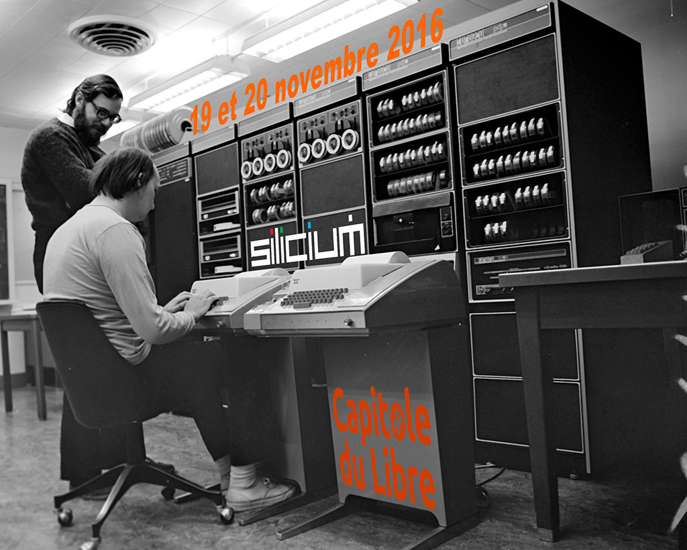

| Tema | Minuto en el video completo | Enlace por tema | |||||
|  | Historia y Licencias | 00:00 | Historia y Licencia | ||||
| Caracteristicas del SO | 10:09 minutos | Caracteristicas del SO | |||||
| Procesos | 19:35 minutos | Procesos | |||||
| Sistema de arranque | 33:27 minutos | Sistema de arranque | |||||
| Memoria | 33:27 minutos | Memoria | |||||
| File System | 48:29 minutos | File System | |||||